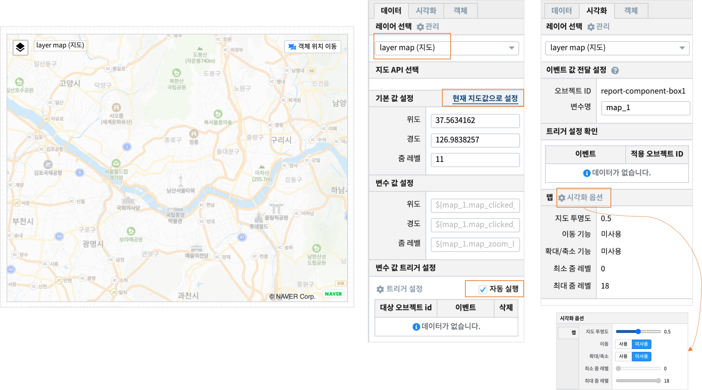
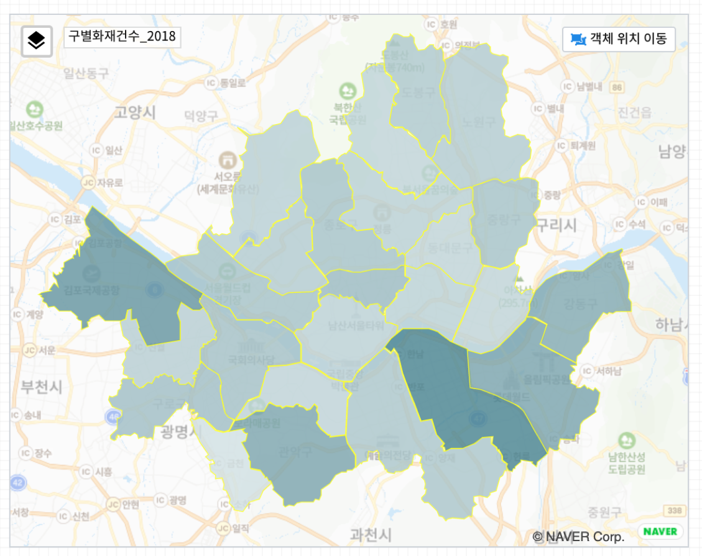
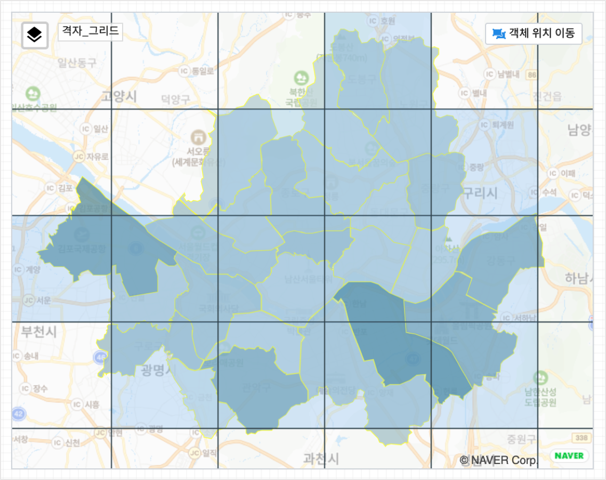
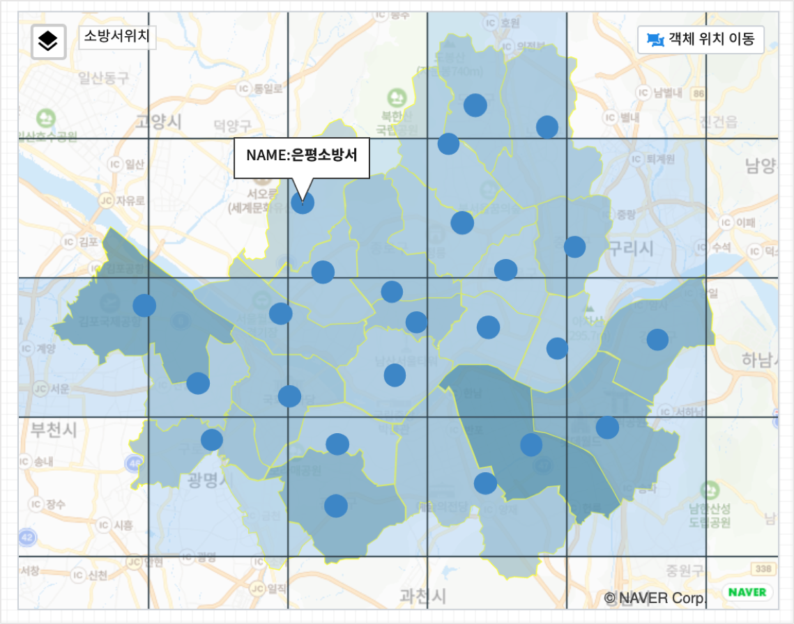
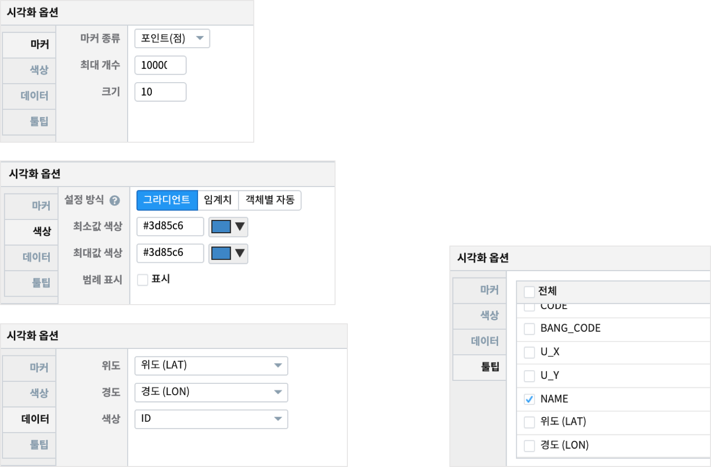

MAP 1 : tile / 도형 / 마커¶
2018년 서울시 구별 화재건수 데이터와 소방서 위,경도 데이터를 3개의 레이어로 지도에 표시하는 보고서 예제입니다.
구별화재건수-2018 레이어에서는 지도의 시각화유형 중 도형-Polygon 으로 행정구 경계를 표시하고, 색상의 진하기로 2018년 구별 화재건수를 표현합니다.
격자_그리드 레이어에서는 지도의 시각화유형 중 Tile 로 소방서위치 기준으로 zoom 레벨 12 로 격자를 생성합니다.
소방서위치 레이어에서는 서울시 소방서의 위/경도 좌표를 시각화유형 마커 로 포인트로 지도에 표시합니다.
“MAP 1” 의 소방서 포인트를 클릭하면 옆의 다른 지도 “MAP 2” 에서 해당 소방서를 중심으로 확대된 지도(zoom 레벨 14)로 표시되고, 해당 소방서와 주변 119안전센터가 같이 표시됩니다.
여기서는 “MAP 1” 그리기를 설명합니다.
Contents
MAP 1 : 도형 / 마커¶
layer map¶
기본 레이어 layer map(지도) : 지도 API는 네이버지도를 선택하고, 서울시가 지도에 다 표현되게 지도 이동을 합니다.
데이터 탭에서 “현재 지도값으로 설정” 으로 현재 위,경도 좌표로 지도가 표현되도록 설정하고, “자동 실행” 을 선택합니다.
- 시각화 탭에서 시각화옵션을 클릭하여 시각화옵션 창에서 “지도 투명도” 를 낮춰서 배경 지도가 흐리게 보이도록 합니다.
이동 기능, 확대/축소 기능을 “미사용” 으로 선택하여 지도위에서 고정이 되도록 합니다.
레이어 관리 창을 열어서 필요한 레이어를 “새 레이어” 를 클릭하여 추가합니다.
{kind=link}
지도 시각화유형 : 도형 (Polygon)¶
지도의 시각화유형 중 도형-Polygon 으로 행정구 경계를 표시하고, 색상 변화를 통해 2018년의 구별 화재건수를 표현합니다.
- 레이어
구별 화재건수_2018
- 데이터탭
- 데이터 모델 EDU_SEOUL_GU_FIRE_CAUSE
서울시 구별로 화재 원인별 발생 건수 통계(연간 통계)
- 검색어
2018년 데이터로 필터링
EDU_SEOUL_GU_WS84 데이터모델과 join 하여 행정구 경계(EDU_SEOUL_GU_WGS84.GEOM 컬럼)를 표시하고, 구별 화재건수에 따라 색을 표시합니다.
데이터 모델 EDU_SEOUL_GU_WS84 을 Analyzer 화면이나 Studio 의 챠트-테이블 에서 조회해보시기 바랍니다. 행정구 경계에 대한 데이터인 GEOM 컬럼의 내용이 어떤 식으로 되어 있는지 확인 할 수 있습니다.
* YEAR=2018 |
join LEFT_OUTER EDU_SEOUL_GU_WGS84 EDU_SEOUL_GU_WGS84.GU_NAME = EDU_SEOUL_GU_FIRE_CAUSE.GU_NAME |
rename TOTAL 화재건수
- 시각화탭
시각화 유형은 도형 선택
시각화옵션을 설정합니다. 도형-색상-데이터-툴팁
지도 시각화유형 : Tile¶
지도의 시각화유형 중 Tile 로 소방서위치 기준으로 zoom 레벨 12 로 격자를 생성합니다.
- 레이어 이름
격자_그리드
- 데이터 탭
- 데이터 모델 EDU_TILE_SEOUL_FIRE_STATION_COOR
격자를 표시하기 위한 정보인 TILE_CODE컬럼이 있는 데이터
- 시각화
시각화유형은 Tile
Tile CODE 만들기
데이터모델 EDU_SEOUL_FIRE_STA_COOR 는 서울시 소방서의 위,경도 좌표가 있는 데이터입니다.
이 모델에서 IRIS DSL 로 TILE_CODE 를 생성하는 검색어 예시입니다.
* | pylambda row : [ int( (1.0 - math.asinh(math.tan(math.radians(row[6]))) / math.pi) / 2.0 * ( 2.0 ** 12 ) )
if i == 6 else
int( ( row[7] + 180.0 ) / 360.0 * (2.0 ** 12 ) )
if i == 7 else row[i] for i in range(len(row)) ] import math
| rename _8 경도 | rename _7 위도 | rename _6 NAME
| concat 경도, ",", 위도, ",12" as TILE_CODE
지도 시각화유형 : 마커¶
서울시 소방서의 위/경도 좌표를 시각화유형 마커 로 포인트로 지도에 표시합니다.
- 레이어 이름
소방서위치
- 데이터탭
- 데이터 모델 EDU_SEOUL_FIRE_STA_COOR
소방서의 위,경도 좌표가 있는 데이터
- 시각화
시각화유형은 마커-포인트
